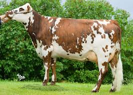
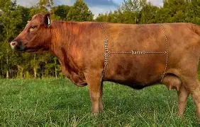
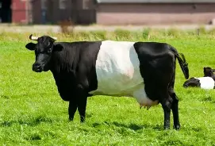
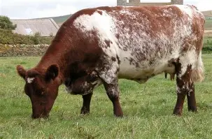
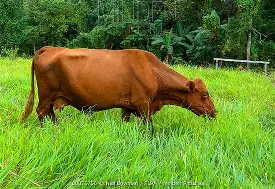
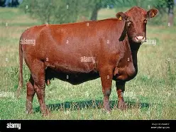
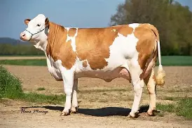
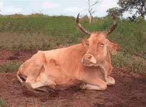

1. Holstein Friesian
The Holstein Friesian is the global icon of dairy farming. Originating from the Netherlands, it’s known for producing the highest volume of milk — smooth, pure, and perfect for fresh dairy products.

2. Jersey
Small but mighty, the Jersey cow produces milk rich in butterfat — perfect for cream, butter, and cheese lovers.

3. Brown Swiss
Strong, calm, and reliable — the Brown Swiss produces creamy, protein-rich milk ideal for fine cheese.

4. Guernsey
The “Golden Cow” of the dairy world, Guernsey milk glows with golden color thanks to natural beta-carotene richness.

5. Ayrshire
Elegant and adaptable, Ayrshire cows produce balanced milk suitable for both drinking and dairy processing.

6. Red Sindhi
Thriving in tropical climates, Red Sindhi cows produce rich milk and show impressive disease resistance.

7. Sahiwal
The pride of tropical dairy farming — Sahiwal cows produce rich, high-fat milk even in hot climates.

8. Tharparkar
Born in the deserts of India, Tharparkar cows symbolize strength, providing steady milk under harsh conditions.

9. Normande
Originating from Normandy, France, the Normande is a dual-purpose breed known for rich milk and tender meat.
Origin: France🥛 Milk Yield: 6,000–7,500 L per lactation
🐮 Type: Dual-purpose (Milk & Meat)
💧 Milk Quality: 4.2% fat, 3.6% protein
🎨 Color: White with brown or red patches
🌾 Traits: Calm, fertile, adaptable to different climates.', this)">
10. Dexter
The Dexter is a small dual-purpose breed from Ireland, valued for both rich milk and quality beef despite its compact size.
Origin: Ireland🥛 Milk Yield: 7–10 liters/day
🐮 Type: Dual-purpose (Milk & Meat)
💧 Milk Quality: About 4% fat, 3.5% protein
🎨 Color: Black, red, or dun (brownish)
🌿 Traits: Hardy, easy to manage, efficient grazer, suitable for small farms.', this)">
11. Dutch Belted
The Dutch Belted cow, famous for its striking white belt around the body, is a rare dairy breed known for high-quality, easily digestible milk.
Origin: Netherlands🥛 Milk Yield: 15–20 liters/day
🐮 Type: Dairy breed
💧 Milk Quality: 3.5–4% fat, rich and easily digestible
🎨 Color: Black or red with a distinct white belt
🌿 Traits: Gentle temperament, efficient grazer, rare heritage breed.', this)">
12. Milking Shorthorn
The Milking Shorthorn is a versatile dairy breed from England, known for good milk yield, calm nature, and strong adaptability.
Origin: England🥛 Milk Yield: 18–25 liters/day
🐮 Type: Dual-purpose (Milk & Meat)
💧 Milk Quality: 3.8% fat, 3.4% protein
🎨 Color: Red, white, or roan (mixed red and white)
🌾 Traits: Calm, fertile, adaptable, efficient producer with balanced milk and meat performance.', this)">
13. Red Poll
The Red Poll is a dual-purpose breed from England, valued for its rich milk and quality beef, as well as its calm and hardy nature.
Origin: England🥛 Milk Yield: 15–20 liters/day
🐮 Type: Dual-purpose (Milk & Meat)
💧 Milk Quality: 4% fat, 3.5% protein
🎨 Color: Deep red, sometimes with small white patches
🌿 Traits: Naturally polled (no horns), calm, hardy, efficient grazer.', this)">
14. Lincoln Red
The Lincoln Red is a hardy dual-purpose breed from England, known for excellent beef quality and good milk yield under pasture conditions.
Origin: England (Lincolnshire region)🥛 Milk Yield: 12–18 liters/day
🐮 Type: Dual-purpose (Milk & Meat)
💧 Milk Quality: Around 4% fat, 3.5% protein
🎨 Color: Deep cherry-red, uniform across the body
🌾 Traits: Hardy, docile, efficient grazer, good mothering ability.', this)">
15. Simmental
The Simmental is one of the oldest and most versatile cattle breeds, known for its high milk yield, strong build, and excellent meat quality.
Origin: Switzerland🥛 Milk Yield: 20–30 liters/day
🐮 Type: Dual-purpose (Milk & Meat)
💧 Milk Quality: 4% fat, 3.4% protein
🎨 Color: Light red and white or gold and white
🌿 Traits: Fast growth, calm temperament, adaptable to various climates, high milk and beef performance.', this)">
16. N'Dama
The N'Dama is a hardy West African breed, famous for its resistance to diseases and ability to produce milk under tropical conditions.
Origin: West Africa (Guinea, Sierra Leone)🥛 Milk Yield: 3–8 liters/day
🐮 Type: Dual-purpose (Milk & Draft)
💧 Milk Quality: 4–5% fat, rich and nutritious
🎨 Color: Light brown, sometimes fawn or gray
🌿 Traits: Resistant to trypanosomiasis (tsetse fly disease), heat-tolerant, strong, and long-lived.', this)">